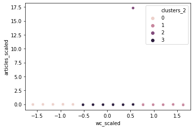

Unsupervised Learning and K-Means Clustering with Python¶
A tutorial by Thomas Jurczyk, CERES (Bochum)
This notebook includes the code used in my clustering tutorial for the Programming Historian. Please note that you need to save the dataset DNP_authors.csv in the same folder as this Jupyter notebook. The dataset is available in my GitHub repository.
If you have any questions or comments, please send them to my email address.
¶
1. Loading dataset & exploratory data analysis¶
import pandas as pd
# load the dataset that has been stored as .csv files in the same folder
# using the author names as index
df_authors = pd.read_csv("books.csv", index_col=0)
# display dataset structure with the pandas .info() method
print(df_authors.info())
# show first 5 rows
print(df_authors.head(5))
<class 'pandas.core.frame.DataFrame'>
Int64Index: 301 entries, 0 to 300
Data columns (total 4 columns):
# Column Non-Null Count Dtype
--- ------ -------------- -----
0 book_id 301 non-null int64
1 genre 301 non-null object
2 publication_year 301 non-null int64
3 price 301 non-null float64
dtypes: float64(1), int64(2), object(1)
memory usage: 11.8+ KB
None
book_id genre publication_year price
0 0 Romance 2012 31.19
1 1 Horror 2009 13.21
2 2 Fantasy 2012 26.99
3 3 Horror 2008 26.95
4 4 Fantasy 2004 26.10
df_authors.describe()
| book_id | publication_year | price | |
|---|---|---|---|
| count | 301.000000 | 301.000000 | 301.000000 |
| mean | 150.000000 | 2010.415282 | 31.153987 |
| std | 87.035433 | 4.670150 | 170.071332 |
| min | 0.000000 | 2003.000000 | 8.750000 |
| 25% | 75.000000 | 2006.000000 | 16.000000 |
| 50% | 150.000000 | 2011.000000 | 22.040000 |
| 75% | 225.000000 | 2015.000000 | 26.660000 |
| max | 300.000000 | 2018.000000 | 2970.000000 |
2. Initializing k-means & scaler¶
# clustering part
from sklearn.preprocessing import StandardScaler as SS
from sklearn.cluster import KMeans
# plotting libraries
import matplotlib.pyplot as plt
import seaborn as sns
# initializing k-means and scaler
scaler = SS()
kmeans = KMeans(n_clusters=3, random_state=42)
3. Applying k-means clustering on the dataset¶
One Hot Encode Categorical Variables¶
dummies = pd.get_dummies(df_authors['genre'])
df_authors = pd.concat([df_authors, dummies], axis=1)
#heart = pd.get_dummies(heart, columns = ['sex', 'chest_pain', 'blood_sugar', 'restecg', 'exang', 'slope', 'thal'], drop_first=True)
df_authors_cp[df_authors_cp['publication_year'].isna()]
| book_id | genre | publication_year | price | Fantasy | Horror | Mystery Fiction | Romance | Young Adult | wc_scaled | articles_scaled | clusters | clusters_2 |
|---|
df_authors_cp['price']
0 31.19
1 13.21
2 26.99
3 26.95
4 26.10
...
296 25.08
297 22.15
298 16.63
299 19.69
300 24.06
Name: price, Length: 301, dtype: float64
df_authors_cp.describe(include='all')
| book_id | genre | publication_year | price | Fantasy | Horror | Mystery Fiction | Romance | Young Adult | wc_scaled | articles_scaled | clusters | clusters_2 | |
|---|---|---|---|---|---|---|---|---|---|---|---|---|---|
| count | 301.000000 | 301 | 301.000000 | 301.000000 | 301.000000 | 301.000000 | 301.000000 | 301.000000 | 301.000000 | 3.010000e+02 | 3.010000e+02 | 301.000000 | 301.000000 |
| unique | NaN | 5 | NaN | NaN | NaN | NaN | NaN | NaN | NaN | NaN | NaN | NaN | NaN |
| top | NaN | Mystery Fiction | NaN | NaN | NaN | NaN | NaN | NaN | NaN | NaN | NaN | NaN | NaN |
| freq | NaN | 72 | NaN | NaN | NaN | NaN | NaN | NaN | NaN | NaN | NaN | NaN | NaN |
| mean | 150.000000 | NaN | 2010.415282 | 31.153987 | 0.219269 | 0.179402 | 0.239203 | 0.176080 | 0.186047 | 2.025401e-14 | -1.770455e-17 | 0.514950 | 1.411960 |
| std | 87.035433 | NaN | 4.670150 | 170.071332 | 0.414440 | 0.384328 | 0.427307 | 0.381522 | 0.389792 | 1.001665e+00 | 1.001665e+00 | 0.507224 | 1.273992 |
| min | 0.000000 | NaN | 2003.000000 | 8.750000 | 0.000000 | 0.000000 | 0.000000 | 0.000000 | 0.000000 | -1.590448e+00 | -1.319523e-01 | 0.000000 | 0.000000 |
| 25% | 75.000000 | NaN | 2006.000000 | 16.000000 | 0.000000 | 0.000000 | 0.000000 | 0.000000 | 0.000000 | -9.470007e-01 | -8.925209e-02 | 0.000000 | 0.000000 |
| 50% | 150.000000 | NaN | 2011.000000 | 22.040000 | 0.000000 | 0.000000 | 0.000000 | 0.000000 | 0.000000 | 1.254117e-01 | -5.367844e-02 | 1.000000 | 1.000000 |
| 75% | 225.000000 | NaN | 2015.000000 | 26.660000 | 0.000000 | 0.000000 | 0.000000 | 0.000000 | 0.000000 | 9.833416e-01 | -2.646813e-02 | 1.000000 | 3.000000 |
| max | 300.000000 | NaN | 2018.000000 | 2970.000000 | 1.000000 | 1.000000 | 1.000000 | 1.000000 | 1.000000 | 1.626789e+00 | 1.730885e+01 | 2.000000 | 3.000000 |
# scale the "word_count" and "articles" columns of df_authors
df_authors_cp = df_authors.copy()
scaled_columns = scaler.fit_transform(df_authors_cp[["price"]])
df_authors_cp["wc_scaled"] = scaled_columns[:,0]
#df_authors_cp["articles_scaled"] = scaled_columns[:,1]
df_authors_cp.head(5)
| book_id | genre | publication_year | price | Fantasy | Horror | Mystery Fiction | Romance | Young Adult | wc_scaled | |
|---|---|---|---|---|---|---|---|---|---|---|
| 0 | 0 | Romance | 2012 | 31.19 | 0 | 0 | 0 | 1 | 0 | 0.000212 |
| 1 | 1 | Horror | 2009 | 13.21 | 0 | 1 | 0 | 0 | 0 | -0.105684 |
| 2 | 2 | Fantasy | 2012 | 26.99 | 1 | 0 | 0 | 0 | 0 | -0.024525 |
| 3 | 3 | Horror | 2008 | 26.95 | 0 | 1 | 0 | 0 | 0 | -0.024760 |
| 4 | 4 | Fantasy | 2004 | 26.10 | 1 | 0 | 0 | 0 | 0 | -0.029766 |
# clustering df_authors_cp
kmeans.fit(df_authors_cp[[ "price"]])
df_authors_cp["clusters"] = kmeans.labels_
4. Plotting the cluster with seaborn¶
sns.scatterplot(x="wc_scaled", y="articles_scaled", hue="clusters", data=df_authors_cp)
plt.ylim(-1.5, 1.5)
---------------------------------------------------------------------------
ValueError Traceback (most recent call last)
<ipython-input-55-b455630c2d19> in <module>
----> 1 sns.scatterplot(x="wc_scaled", hue="clusters", data=df_authors_cp)
2 plt.ylim(-1.5, 1.5)
~/opt/anaconda3/lib/python3.7/site-packages/seaborn/relational.py in scatterplot(x, y, hue, style, size, data, palette, hue_order, hue_norm, sizes, size_order, size_norm, markers, style_order, x_bins, y_bins, units, estimator, ci, n_boot, alpha, x_jitter, y_jitter, legend, ax, **kwargs)
1395 x_bins=x_bins, y_bins=y_bins,
1396 estimator=estimator, ci=ci, n_boot=n_boot,
-> 1397 alpha=alpha, x_jitter=x_jitter, y_jitter=y_jitter, legend=legend,
1398 )
1399
~/opt/anaconda3/lib/python3.7/site-packages/seaborn/relational.py in __init__(self, x, y, hue, size, style, data, palette, hue_order, hue_norm, sizes, size_order, size_norm, dashes, markers, style_order, x_bins, y_bins, units, estimator, ci, n_boot, alpha, x_jitter, y_jitter, legend)
884
885 plot_data = self.establish_variables(
--> 886 x, y, hue, size, style, units, data
887 )
888
~/opt/anaconda3/lib/python3.7/site-packages/seaborn/relational.py in establish_variables(self, x, y, hue, size, style, units, data)
159 err = ("Either both or neither of `x` and `y` must be specified "
160 "(but try passing to `data`, which is more flexible).")
--> 161 raise ValueError(err)
162
163 # ---- Post-processing
ValueError: Either both or neither of `x` and `y` must be specified (but try passing to `data`, which is more flexible).
df_authors_cp[df_authors_cp["clusters"] == 2]
| book_id | genre | publication_year | price | Fantasy | Horror | Mystery Fiction | Romance | Young Adult | wc_scaled | articles_scaled | clusters | |
|---|---|---|---|---|---|---|---|---|---|---|---|---|
| 185 | 185 | Fantasy | 2013 | 2970.0 | 1 | 0 | 0 | 0 | 0 | 0.554377 | 17.308855 | 2 |
5. Applying the “elbow method” (hyperparameter tuning)¶
# elbow method
# preparing data for plotting
cluster_range = list(range(2,7))
inertia_list = []
for k in cluster_range:
kmeans = KMeans(n_clusters=k, random_state=42)
kmeans.fit(df_authors_cp[["wc_scaled", "articles_scaled"]])
inertia_list.append(kmeans.inertia_)
# plotting
fig = plt.figure(figsize=(7,7))
ax = fig.add_subplot(111)
sns.lineplot(y=inertia_list, x=cluster_range, ax=ax)
ax.set_xlabel("Clusters")
ax.set_ylabel("Inertia")
ax.set_xticks([2,3,4,5,6])
[<matplotlib.axis.XTick at 0x7f8b3a7e38d0>,
<matplotlib.axis.XTick at 0x7f8b3a7e3890>,
<matplotlib.axis.XTick at 0x7f8b3a7e3450>,
<matplotlib.axis.XTick at 0x7f8b3a85ff50>,
<matplotlib.axis.XTick at 0x7f8b3a873b90>]
# k-means with 4 clusters
kmeans = KMeans(n_clusters=4, random_state=42)
kmeans.fit(df_authors_cp[["wc_scaled", "articles_scaled"]])
df_authors_cp["clusters_2"] = kmeans.labels_
6. Plotting the final clusters¶
sns.scatterplot(x="wc_scaled", y="articles_scaled", hue="clusters_2", data=df_authors_cp)
plt.savefig("results_2")
